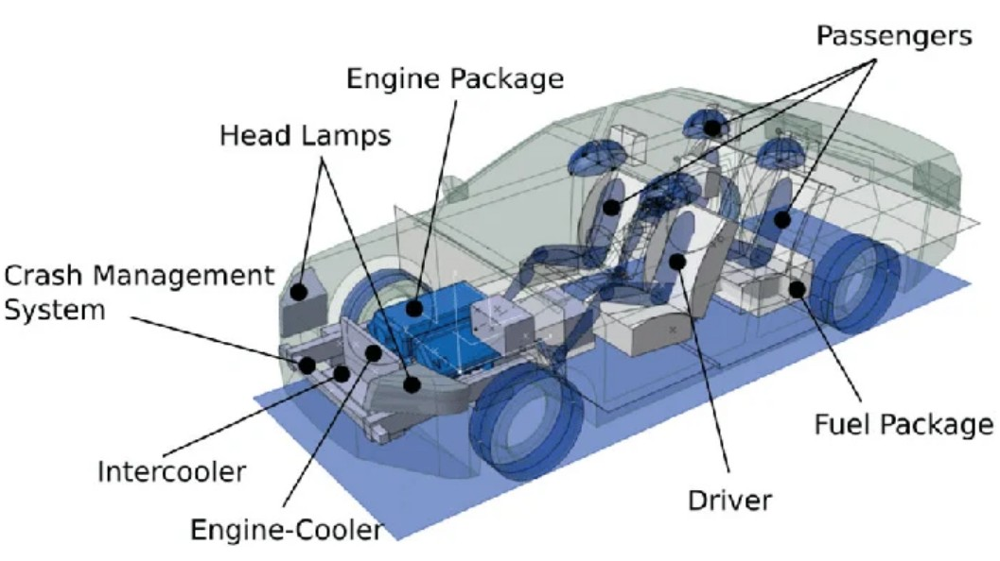
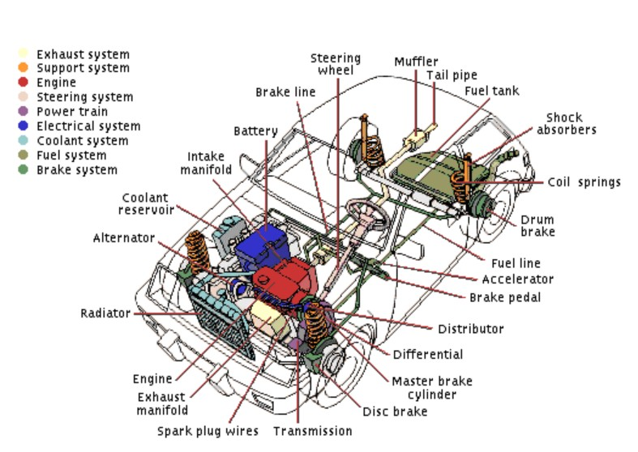
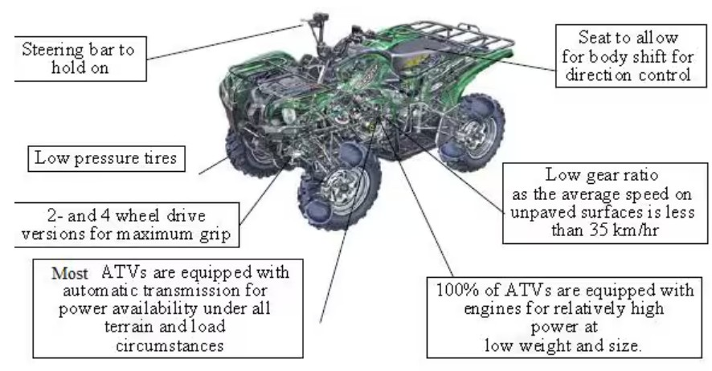
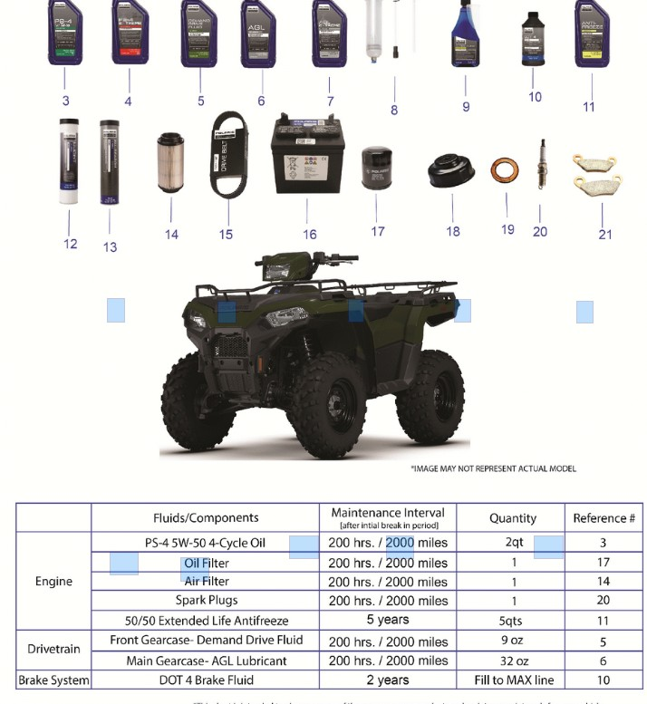
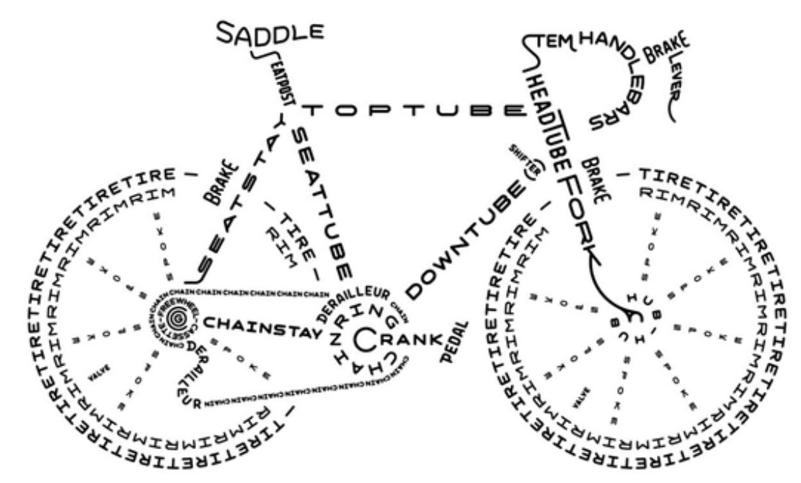
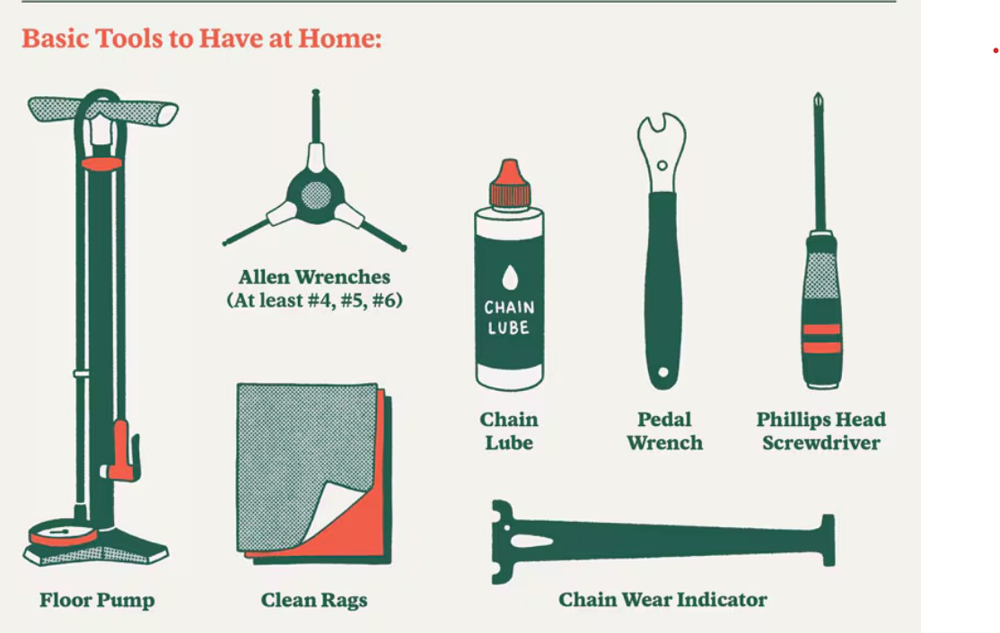

Car Technical
Cars require regular inspection for optimal preformance AAA checklist. Cars are heavy vehicles Over 1 ton with many moving parts which can break at high performance.


Quad Technical
Quads require intial inspections for optimal performance. Based on the performance the quad may need frequent maintenance ATV maintenance. Quads are much lighter than cars 350 pounds therefore they can be moved arround more with less mechanical issues.


Bike Technical
Bikes require initial inspection for optimal performance. Bikes are very light 30 pounds. Bikes also have no engine, so they do not need engine cooling, fuel, timing of parts, etc. Maintenance is usually low however there are still items you can check: Bicycle Habit Checklist.

